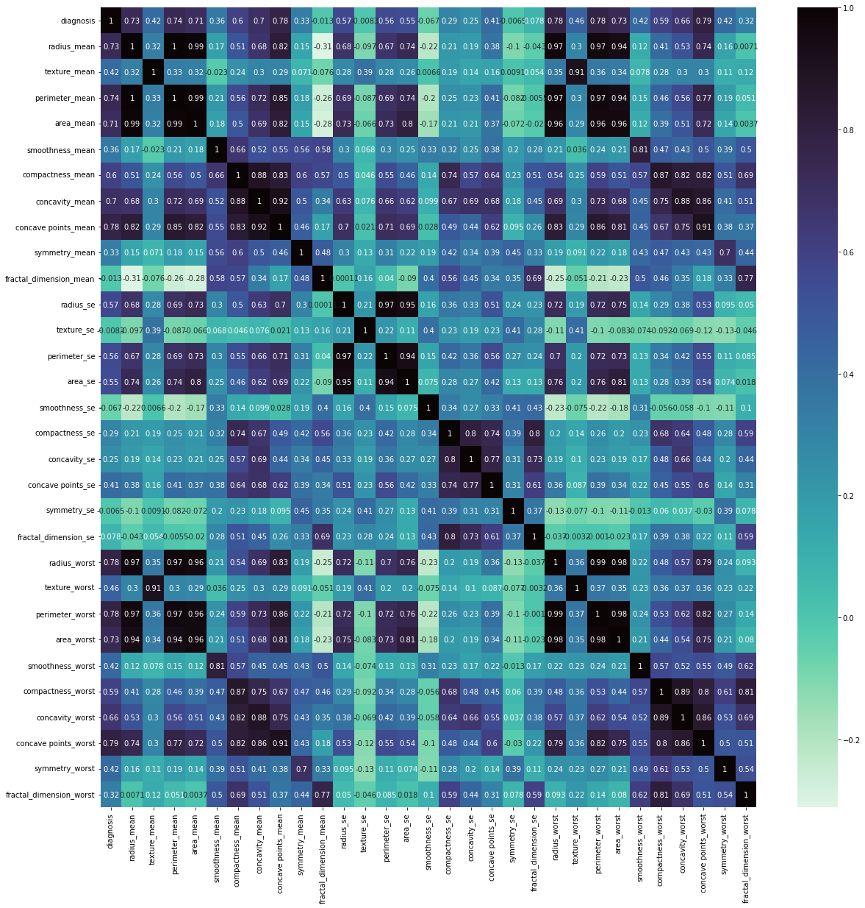

In this tutorial, we’ll explore how to build a simple neural network from the ground up using Python. Neural networks are the backbone of deep learning models and power a variety of applications from image classification to natural language processing.
Our goal here is to understand the underlying mechanics of a neural network and implement one from scratch—without relying on high-level libraries like TensorFlow or PyTorch. By the end of this tutorial, you'll have a solid understanding of how neural networks work, including key elements like activation functions (ReLU, Sigmoid), forward propagation, and backpropagation.
We'll also perform some basic data analysis to prepare our dataset and evaluate the performance of our model. Let's get started!
To follow along, you should have a basic understanding of Python and fundamental concepts in machine learning such as:
In this step, we’ll import the necessary Python libraries for data analysis, visualization, and machine learning. We’ll also load the breast cancer dataset and preview its structure to understand the data we’ll be working with.
import seaborn as sns
import numpy as np
import pandas as pd
import matplotlib.pyplot as plt
import plotly.express as px
from sklearn.model_selection import train_test_split
from sklearn.preprocessing import StandardScaler
from sklearn.metrics import accuracy_score
df = pd.read_csv('/kaggle/input/breast-cancer-dataset/breast-cancer.csv')
df.head()| id | diagnosis | radius_mean | texture_mean | perimeter_mean | area_mean | smoothness_mean | compactness_mean | concavity_mean | concave points_mean | ... | radius_worst | texture_worst | perimeter_worst | area_worst | smoothness_worst | compactness_worst | concavity_worst | concave points_worst | symmetry_worst | fractal_dimension_worst | |
|---|---|---|---|---|---|---|---|---|---|---|---|---|---|---|---|---|---|---|---|---|---|
| 0 | 842302 | M | 17.99 | 10.38 | 122.80 | 1001.0 | 0.11840 | 0.27760 | 0.3001 | 0.14710 | ... | 25.38 | 17.33 | 184.60 | 2019.0 | 0.1622 | 0.6656 | 0.7119 | 0.2654 | 0.4601 | 0.11890 |
| 1 | 842517 | M | 20.57 | 17.77 | 132.90 | 1326.0 | 0.08474 | 0.07864 | 0.0869 | 0.07017 | ... | 24.99 | 23.41 | 158.80 | 1956.0 | 0.1238 | 0.1866 | 0.2416 | 0.1860 | 0.2750 | 0.08902 |
| 2 | 84300903 | M | 19.69 | 21.25 | 130.00 | 1203.0 | 0.10960 | 0.15990 | 0.1974 | 0.12790 | ... | 23.57 | 25.53 | 152.50 | 1709.0 | 0.1444 | 0.4245 | 0.4504 | 0.2430 | 0.3613 | 0.08758 |
| 3 | 84348301 | M | 11.42 | 20.38 | 77.58 | 386.1 | 0.14250 | 0.28390 | 0.2414 | 0.10520 | ... | 14.91 | 26.50 | 98.87 | 567.7 | 0.2098 | 0.8663 | 0.6869 | 0.2575 | 0.6638 | 0.17300 |
| 4 | 84358402 | M | 20.29 | 14.34 | 135.10 | 1297.0 | 0.10030 | 0.13280 | 0.1980 | 0.10430 | ... | 22.54 | 16.67 | 152.20 | 1575.0 | 0.1374 | 0.2050 | 0.4000 | 0.1625 | 0.2364 | 0.07678 |
5 rows × 32 columns
pd.read_csv()
function reads the breast cancer dataset from a CSV file into a
DataFrame (df). This is followed by df.head(),
which displays the first five rows of the dataset to give a preview of
the data structure, such as column names and sample values.px.scatter(data_frame=df,x='symmetry_worst',color='diagnosis',color_discrete_sequence=['#05445E','#75E6DA'])df = pd.read_csv('/kaggle/input/breast-cancer-dataset/breast-cancer.csv')
df.head()| id | diagnosis | radius_mean | texture_mean | perimeter_mean | area_mean | smoothness_mean | compactness_mean | concavity_mean | concave points_mean | ... | radius_worst | texture_worst | perimeter_worst | area_worst | smoothness_worst | compactness_worst | concavity_worst | concave points_worst | symmetry_worst | fractal_dimension_worst | |
|---|---|---|---|---|---|---|---|---|---|---|---|---|---|---|---|---|---|---|---|---|---|
| 0 | 842302 | M | 17.99 | 10.38 | 122.80 | 1001.0 | 0.11840 | 0.27760 | 0.3001 | 0.14710 | ... | 25.38 | 17.33 | 184.60 | 2019.0 | 0.1622 | 0.6656 | 0.7119 | 0.2654 | 0.4601 | 0.11890 |
| 1 | 842517 | M | 20.57 | 17.77 | 132.90 | 1326.0 | 0.08474 | 0.07864 | 0.0869 | 0.07017 | ... | 24.99 | 23.41 | 158.80 | 1956.0 | 0.1238 | 0.1866 | 0.2416 | 0.1860 | 0.2750 | 0.08902 |
| 2 | 84300903 | M | 19.69 | 21.25 | 130.00 | 1203.0 | 0.10960 | 0.15990 | 0.1974 | 0.12790 | ... | 23.57 | 25.53 | 152.50 | 1709.0 | 0.1444 | 0.4245 | 0.4504 | 0.2430 | 0.3613 | 0.08758 |
| 3 | 84348301 | M | 11.42 | 20.38 | 77.58 | 386.1 | 0.14250 | 0.28390 | 0.2414 | 0.10520 | ... | 14.91 | 26.50 | 98.87 | 567.7 | 0.2098 | 0.8663 | 0.6869 | 0.2575 | 0.6638 | 0.17300 |
| 4 | 84358402 | M | 20.29 | 14.34 | 135.10 | 1297.0 | 0.10030 | 0.13280 | 0.1980 | 0.10430 | ... | 22.54 | 16.67 | 152.20 | 1575.0 | 0.1374 | 0.2050 | 0.4000 | 0.1625 | 0.2364 | 0.07678 |
5 rows × 32 columns
df.drop('id', axis=1, inplace=True) #drop redundant columns
df['diagnosis'] = (df['diagnosis'] == 'M').astype(int) #encode the label into 1/0
corr = df.corr()
plt.figure(figsize=(20,20))
sns.heatmap(corr, cmap='mako_r',annot=True)
plt.show()
Scatter Plot (px.scatter): As
explained earlier, this visualizes the relationship between the feature
symmetry_worst and the diagnosis of the tumor (benign or
malignant). This helps us observe how symmetry affects
diagnosis.
Dropping Redundant Columns
(df.drop): The id column is not
useful for the model as it only serves as a unique identifier for each
row. By dropping this column, we remove unnecessary data.
Encoding the Target Label
(df['diagnosis'] = (df['diagnosis'] == 'M').astype(int)):
The diagnosis column is converted from a categorical
variable ('M' for Malignant, 'B' for Benign) into a binary numerical
variable:
1 for Malignant0 for Benign This is crucial for training the neural
network, which requires numerical inputs and outputs.Correlation Matrix (df.corr()): We
calculate the correlation matrix to examine the linear relationships
between all features. This gives us a better understanding of how
different features interact with one another.
Heatmap (sns.heatmap): The heatmap
visually represents the correlation matrix, where:
diagnosis) and could be useful for model
training.This step ensures our data is clean, encoded properly, and ready for building the neural network while providing insights through visualization.
In this step, we calculate the correlation between features and the target variable (diagnosis). We then filter and select only the features that have a correlation higher than a set threshold (0.2 in this case). This helps us focus on the most relevant features for building our neural network model.
# Get the absolute value of the correlation
cor_target = abs(corr["diagnosis"])
# Select highly correlated features (thresold = 0.2)
relevant_features = cor_target[cor_target>0.2]
# Collect the names of the features
names = [index for index, value in relevant_features.iteritems()]
# Drop the target variable from the results
names.remove('diagnosis')
# Display the results
print(names)
X = df[names].values
y = df['diagnosis'].values['radius_mean', 'texture_mean', 'perimeter_mean', 'area_mean', 'smoothness_mean', 'compactness_mean', 'concavity_mean', 'concave points_mean', 'symmetry_mean', 'radius_se', 'perimeter_se', 'area_se', 'compactness_se', 'concavity_se', 'concave points_se', 'radius_worst', 'texture_worst', 'perimeter_worst', 'area_worst', 'smoothness_worst', 'compactness_worst', 'concavity_worst', 'concave points_worst', 'symmetry_worst', 'fractal_dimension_worst']
cor_target = abs(corr["diagnosis"])):
diagnosis). This ensures
we consider both positive and negative correlations.relevant_features = cor_target[cor_target > 0.2]):
names = [index for index, value in relevant_features.iteritems()]):
names.names.remove('diagnosis')):
diagnosis is our target variable, we remove it
from the list of features to avoid using it as an input in our
model.X
and y):
X: The feature matrix contains only
the selected features that are highly correlated with the target.y: The target vector holds the encoded
diagnosis labels (1 for malignant, 0 for benign).By selecting only the most relevant features, we ensure that the neural network focuses on important predictors, potentially improving model performance and reducing complexity. This step prepares the feature matrix and target vector for training the model.
In this step, we create a custom function to split the dataset into training and testing sets. This allows us to separate a portion of the data to evaluate our model after training, ensuring that the model generalizes well to unseen data.
def train_test_split(X, y, random_state=41, test_size=0.2):
"""
Splits the data into training and testing sets.
Parameters:
X (numpy.ndarray): Features array of shape (n_samples, n_features).
y (numpy.ndarray): Target array of shape (n_samples,).
random_state (int): Seed for the random number generator. Default is 42.
test_size (float): Proportion of samples to include in the test set. Default is 0.2.
Returns:
Tuple[numpy.ndarray]: A tuple containing X_train, X_test, y_train, y_test.
"""
# Get number of samples
n_samples = X.shape[0]
# Set the seed for the random number generator
np.random.seed(random_state)
# Shuffle the indices
shuffled_indices = np.random.permutation(np.arange(n_samples))
# Determine the size of the test set
test_size = int(n_samples * test_size)
# Split the indices into test and train
test_indices = shuffled_indices[:test_size]
train_indices = shuffled_indices[test_size:]
# Split the features and target arrays into test and train
X_train, X_test = X[train_indices], X[test_indices]
y_train, y_test = y[train_indices], y[test_indices]
return X_train, X_test, y_train, y_testX: The feature matrix.y: The target vector.random_state: A seed value to ensure
reproducibility when shuffling the data.test_size: The proportion of the
dataset to include in the test set. Here, it's set to 0.2 (20%).n_samples holds the number of samples in the dataset, which
we get from the shape of X.
np.random.seed(random_state) to ensure the data is shuffled
in the same way each time the function is called.
np.random.permutation(), ensuring that
the data is mixed before splitting.test_size = int(n_samples * test_size).
test_size indices
go into the test set, while the rest go into the training set.X
and y based on these indices into X_train,
X_test, y_train, and y_test.
This function allows us to easily partition our data into training and testing sets, a crucial step before building and evaluating machine learning models.
In this step, we first standardize the feature data to ensure that all features contribute equally to the model training. We then split the standardized data into training and testing sets. This is an important preprocessing step to improve the performance of neural networks.
def scale(X):
"""
Standardizes the data in the array X.
Parameters:
X (numpy.ndarray): Features array of shape (n_samples, n_features).
Returns:
numpy.ndarray: The standardized features array.
"""
# Calculate the mean and standard deviation of each feature
mean = np.mean(X, axis=0)
std = np.std(X, axis=0)
# Standardize the data
X = (X - mean) / std
return X
X = scale(X)
X_train, X_test, y_train, y_test = train_test_split(X, y, test_size = 0.2, random_state=42) #split the data into traing and validatingscale(X)):
np.mean(X, axis=0) and
np.std(X, axis=0), which computes the mean and standard
deviation across all samples for each feature.
train_test_split):
train_test_split function to split
the scaled features (X) and target labels (y)
into training and testing datasets.test_size=0.2 indicates that 20% of
the data will be set aside for testing the model after training.random_state=42 ensures that the data
is split consistently across different runs, making results
reproducible.At this stage, we have a scaled feature set ready for training, along with separate training and testing sets. This prepares us for the subsequent steps in building and evaluating the neural network model.
In this step, we implement the Rectified Linear Unit (ReLU) activation function. ReLU is commonly used in neural networks due to its simplicity and effectiveness in introducing non-linearity into the model. It helps the network learn complex patterns by allowing it to better capture relationships in the data.
def relu(Z):
"""
Implement the ReLU function.
Arguments:
Z -- Output of the linear layer
Returns:
A -- Post-activation parameter
cache -- used for backpropagation
"""
A = np.maximum(0,Z)
cache = Z
return A, cacheZ: This is the output from the linear
layer of the neural network, which may contain both positive and
negative values.Z in a variable called
cache. This is crucial for backpropagation, as we need the
original input to compute gradients during the training process.
A: The output after applying the ReLU
activation, which will be passed to the next layer in the network.cache: The input Z is
returned for use in the backpropagation step.By implementing the ReLU activation function, we prepare our neural network to handle non-linear transformations, which are essential for learning complex data patterns.
z = np.linspace(-12, 12, 200)
fig = px.line(x=z, y=relu(z)[0],title='ReLU Function',template="plotly_dark")
fig.update_layout(
title_font_color="#00F1FF",
xaxis=dict(color="#00F1FF"),
yaxis=dict(color="#00F1FF")
)
fig.show()The Sigmoid function is a common activation function used in Neural Networks, particularly for binary classification problems. It is represented by the following formula:
\begin{equation} f(Z) = \frac{1}{1+e^{-Z}} \end{equation}
where Z is the input to the function.
The Sigmoid function maps any real-valued number to a value between 0 and 1, which can be interpreted as a probability. In binary classification problems, we often use the Sigmoid function as the activation function for the output layer of the Neural Network, since it can be used to compute the probability of the input belonging to the positive class.
In this step, we implement the Sigmoid activation function, which is another commonly used activation function in neural networks. The Sigmoid function maps any input value to a range between 0 and 1, making it particularly useful for binary classification problems.
def sigmoid(Z):
"""
Implement the Sigmoid function.
Arguments:
Z -- Output of the linear layer
Returns:
A -- Post-activation parameter
cache -- a python dictionary containing "A" for backpropagation
"""
A = 1/(1+np.exp(-Z))
cache = Z
return A, cacheZ: This is the output from the linear
layer of the neural network, similar to what we used in the ReLU
function.cache,
which will be used during the backpropagation step to compute
gradients.A: The output after applying the
Sigmoid activation, which can be interpreted as the predicted
probability of the positive class (in binary classification).cache: The input ( Z ) is returned for
use in backpropagation.z = np.linspace(-12, 12, 200)
fig = px.line(x=z, y=sigmoid(z)[0],title='Sigmoid Function',template="plotly_dark")
fig.update_layout(
title_font_color="#00F1FF",
xaxis=dict(color="#00F1FF"),
yaxis=dict(color="#00F1FF")
)
fig.show()This step outlines the implementation of a feedforward neural network in Python, which includes methods for initializing parameters, forward propagation, cost calculation, backpropagation, and parameter updates. The class is designed to facilitate training a neural network with multiple layers and includes activation functions like ReLU and sigmoid.
class NeuralNetwork:
def __init__(self, layer_dimensions=[25,16,16,1],learning_rate=0.00001):
"""
Parameters
----------
layer_dimensions : list
python array (list) containing the dimensions of each layer in our network
learning_rate : float
learning rate of the network.
"""
self.layer_dimensions = layer_dimensions
self.learning_rate = learning_rate
def initialize_parameters(self):
"""initializes the parameters"""
np.random.seed(3)
self.n_layers = len(self.layer_dimensions)
for l in range(1, self.n_layers):
vars(self)[f'W{l}'] = np.random.randn(self.layer_dimensions[l], self.layer_dimensions[l-1]) * 0.01
vars(self)[f'b{l}'] = np.zeros((self.layer_dimensions[l], 1))
def _linear_forward(self, A, W, b):
"""
Implements the linear part of a layer's forward propagation.
Arguments:
A -- activations from previous layer (size of previous layer, number of examples)
W -- weights matrix: numpy array of shape (size of current layer, size of previous layer)
b -- bias vector, numpy array of shape (size of the current layer, 1)
Returns:
Z -- pre-activation parameter
cache -- a python tuple containing "A", "W" and "b" for backpropagation
"""
# Compute Z
Z = np.dot(W,A) + b
# Cache A, W , b for backpropagation
cache = (A, W, b)
return Z, cache
def _forward_propagation(self,A_prev ,W ,b , activation):
"""
Implements the forward propagation for a network layer
Arguments:
A_prev -- activations from previous layer, shape : (size of previous layer, number of examples)
W -- shape : (size of current layer, size of previous layer)
b -- shape : (size of the current layer, 1)
activation -- the activation to be used in this layer
Returns:
A -- the output of the activation function
cache -- a python tuple containing "linear_cache" and "activation_cache" for backpropagation
"""
# Compute Z using the function defined above, compute A using the activaiton function
if activation == "sigmoid":
Z, linear_cache = self._linear_forward(A_prev, W, b)
A, activation_cache = sigmoid(Z)
elif activation == "relu":
Z, linear_cache = self._linear_forward(A_prev, W, b)
A, activation_cache = relu(Z)
#Store the cache for backpropagation
cache = (linear_cache, activation_cache)
return A, cache
def forward_propagation(self, X):
"""
Implements forward propagation for the whole network
Arguments:
X -- shape : (input size, number of examples)
Returns:
AL -- last post-activation value
caches -- list of cache returned by _forward_propagation helper function
"""
# Initialize empty list to store caches
caches = []
# Set initial A to X
A = X
L = self.n_layers -1
for l in range(1, L):
A_prev = A
# Forward propagate through the network except the last layer
A, cache = self._forward_propagation(A_prev, vars(self)['W' + str(l)], vars(self)['b' + str(l)], "relu")
caches.append(cache)
# Forward propagate through the output layer and get the predictions
predictions, cache = self._forward_propagation(A, vars(self)['W' + str(L)], vars(self)['b' + str(L)], "sigmoid")
# Append the cache to caches list recall that cache will be (linear_cache, activation_cache)
caches.append(cache)
return predictions, caches
def compute_cost(self, predictions, y):
"""
Implements the cost function
Arguments:
predictions -- The model predictions, shape : (1, number of examples)
y -- The true values, shape : (1, number of examples)
Returns:
cost -- cross-entropy cost
"""
# Get number of training examples
m = y.shape[0]
# Compute cost we're adding small epsilon for numeric stability
cost = (-1/m) * (np.dot(y, np.log(predictions+1e-9).T) + np.dot((1-y), np.log(1-predictions+1e-9).T))
# squeeze the cost to set it into the correct shape
cost = np.squeeze(cost)
return cost
def _linear_backward(self, dZ, cache):
"""
Implements the linear portion of backward propagation
Arguments:
dZ -- Gradient of the cost with respect to the linear output of the current layer
cache -- tuple of values (A_prev, W, b) coming from the forward propagation in the current layer
Returns:
dA_prev -- Gradient of the cost with respect to the activation (of the previous layer l-1), same shape as A_prev
dW -- Gradient of the cost with respect to W (current layer l), same shape as W
db -- Gradient of the cost with respect to b (current layer l), same shape as b
"""
# Get the cache from forward propagation
A_prev, W, b = cache
# Get number of training examples
m = A_prev.shape[1]
# Compute gradients for W, b and A
dW = (1/m) * np.dot(dZ, A_prev.T)
db = (1/m) * np.sum(dZ, axis=1, keepdims=True)
dA_prev = np.dot(W.T,dZ)
return dA_prev, dW, db
def update_parameters(self):
"""
Updates parameters using gradient descent
"""
L = self.n_layers - 1
# Loop over parameters and update them using computed gradients
for l in range(L):
vars(self)[f'W{l+1}'] = vars(self)[f'W{l+1}'] - self.learning_rate * vars(self)[f'dW{l+1}']
vars(self)[f'b{l+1}'] = vars(self)[f'b{l+1}'] - self.learning_rate * vars(self)[f'db{l+1}']
def fit(self,X, Y, epochs=2000, print_cost=True):
"""
Trains the Neural Network using input data
Arguments:
X -- input data
Y -- true "label"
Epochs -- number of iterations of the optimization loop
print_cost -- If set to True, this will print the cost every 100 iterations
"""
# Transpose X to get the correct shape
X = X.T
np.random.seed(1)
#create empty array to store the costs
costs = []
# Get number of training examples
m = X.shape[1]
# Initialize parameters
self.initialize_parameters()
# loop for stated number of epochs
for i in range(0, epochs):
# Forward propagate and get the predictions and caches
predictions, caches = self.forward_propagation(X)
#compute the cost function
cost = self.compute_cost(predictions, Y)
# Calculate the gradient and update the parameters
self.back_propagation(predictions, Y, caches)
self.update_parameters()
# Print the cost every 10000 training example
if print_cost and i % 5000 == 0:
print("Cost after iteration {}: {}".format(i, np.squeeze(cost)))
if print_cost and i % 5000 == 0:
costs.append(cost)
if print_cost:
# Plot the cost over training
fig = px.line(y=np.squeeze(costs),title='Cost',template="plotly_dark")
fig.update_layout(
title_font_color="#00F1FF",
xaxis=dict(color="#00F1FF"),
yaxis=dict(color="#00F1FF")
)
fig.show()
def predict(self,X,y):
"""
uses the trained model to predict given X value
Arguments:
X -- data set of examples you would like to label
y -- True values of examples; used for measuring the model's accuracy
Returns:
predictions -- predictions for the given dataset X
"""
X = X.T
# Get predictions from forward propagation
predictions, _ = self.forward_propagation(X)
# Predictions Above 0.5 are True otherwise they are False
predictions = (predictions > 0.5)
# Squeeze the predictions into the correct shape and cast true/false values to 1/0
predictions = np.squeeze(predictions.astype(int))
#Print the accuracy
return np.sum((predictions == y)/X.shape[1]), predictions.TNeuralNetwork class initializes with layer dimensions and
learning rate.
fit method trains
the model over multiple epochs, with cost logging and optional
plotting.predict method
generates class predictions based on trained weights and biases.This class effectively encapsulates a simple feedforward neural network structure, enabling both training and inference.
In this step, we define the train_evaluate_model
function, which trains a neural network model using specified
hyperparameters and evaluates its performance on test data. The function
performs the following actions:
NeuralNetwork class using the provided learning rate and
layer dimensions.
X_train, y_train) for a specified number
of epochs, suppressing the output of the training cost.X_test) and calculate the
accuracy based on the predictions compared to the true labels
(y_test).Here’s the implementation of the function:
def train_evaluate_model(X_train, y_train, X_test, y_test, learning_rate, layer_dimensions, epochs):
'''
Keyword arguments:
X_train -- Training data
y_train -- Traing labels
X_train -- test data
y_train -- test labels
layer_dimensions -- python array (list) containing the dimensions of each layer in our network
learning_rate -- learning rate of the network.
Epochs -- number of iterations of the optimization loop
returns a dataframe
'''
# create model instance with the given hyperparameters
model = NeuralNetwork(learning_rate=learning_rate,layer_dimensions=layers)
# fit the model
model.fit(X_train, y_train,epochs=epochs,print_cost=False)
accuracy, predictions = model.predict(X_test, y_test) # calculate accuracy and predictions
#create a dataframe to visualize the results
eval_df = pd.DataFrame([[learning_rate, layer_dimensions, epochs, accuracy]], columns=['Learning_Rate', 'Layers', 'Epochs', 'Accuracy'])
return eval_dflearning_rate = 0.001
layers = [25,1,1]
epochs = 3000
results = train_evaluate_model(X_train, y_train, X_test, y_test, learning_rate=learning_rate, layer_dimensions=layers, epochs=epochs)
results.index = ['Model_1']
results.style.background_gradient(cmap =sns.cubehelix_palette(start=.5, rot=-.5, as_cmap=True))| Learning_Rate | Layers | Epochs | Accuracy | |
|---|---|---|---|---|
| Model_1 | 0.001000 | [25, 1, 1] | 3000 | 0.628319 |
learning_rate, layers, and
epochs variables are set to define the model’s training
behavior.
train_evaluate_model function is called with the
specified parameters, which trains the neural network and evaluates its
performance on the test set.This step effectively encapsulates the entire training and evaluation process for your neural network model, showcasing the results in an easily interpretable format. You can execute this code in your environment to see the results visually represented.
model = NeuralNetwork(learning_rate=0.0001)
model.fit(X_train, y_train,epochs=30000,print_cost=True)Cost after iteration 0: 0.6931646385744642
Cost after iteration 5000: 0.6859908438587179
Cost after iteration 10000: 0.6804080309241175
Cost after iteration 15000: 0.6760589221252522
Cost after iteration 20000: 0.6726670677037514
Cost after iteration 25000: 0.6700190881972163
accuracy,predictions = model.predict(X_test, y_test)NeuralNetwork class is created
with a learning rate of 0.0001. This parameter controls how
quickly the model learns during training.fit method is called on the model, training it
using the training data (X_train and y_train)
for 30,000 epochs. The print_cost=True
argument ensures that the cost (loss) is printed at each epoch, allowing
you to monitor the model's learning progress.predict method is used to evaluate
the model on the test data (X_test and
y_test). This method returns the accuracy of the model on
the test set and the predictions made for the test samples.
In this tutorial, we walked through the process of building and evaluating a simple neural network using Python. Here’s a recap of what we covered:
Data Preparation: We began by loading and preprocessing the dataset, ensuring it was ready for model training. Understanding your data is crucial, as it directly impacts the performance of your neural network.
Neural Network Implementation: We implemented a basic neural network architecture from scratch, allowing us to customize various hyperparameters such as learning rate, layer dimensions, and the number of epochs. This flexibility enables experimentation with different configurations to find the optimal setup for our specific problem.
Model Training: Through the fit
method, we trained our model using the training dataset. We monitored
the cost at each epoch, providing insights into the model's learning
process and helping us identify potential issues like overfitting or
underfitting.
Model Evaluation: After training, we evaluated the model's performance on unseen test data. By calculating the accuracy and making predictions, we could assess how well our model generalized to new data.
Hyperparameter Tuning: We demonstrated the importance of hyperparameter tuning by experimenting with different learning rates and epoch counts, showcasing how these choices can significantly affect model performance.
This tutorial provided a foundational understanding of neural networks and practical skills to implement and evaluate them using Python. With this knowledge, you can explore more complex architectures and techniques, such as convolutional neural networks (CNNs) or recurrent neural networks (RNNs), to tackle various machine learning challenges.
To further enhance your understanding and skills, consider the following:
Thank you for following along with this tutorial! If you have any questions or need further assistance, feel free to reach out. Happy coding!